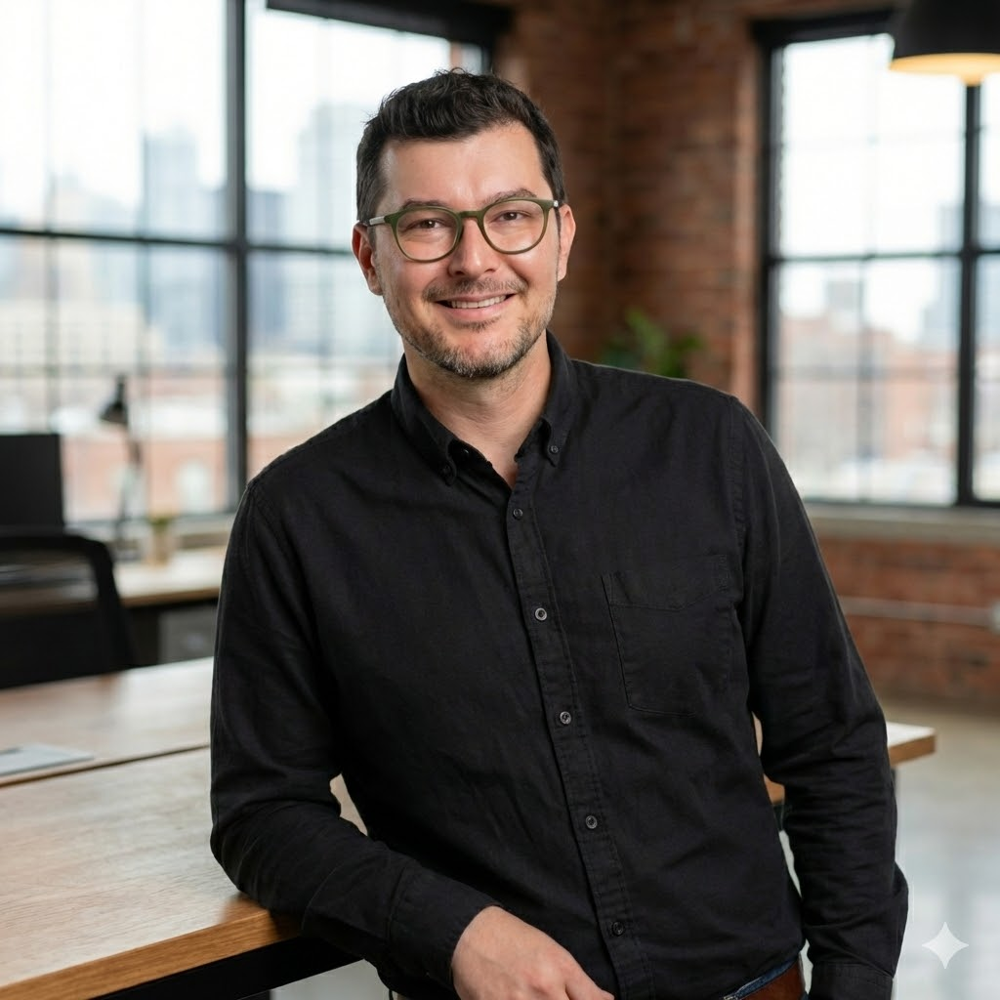

Twenty years of consumer web UI, design systems, and the unglamorous craft of making 50 components behave like 150 across four brands. Most recently: Senior Design Engineer on Commerce Product at Peacock (NBCUniversal).

An opinionated design technologist who's spent twenty years on the bridge between design and engineering.
I started as a front-end developer at Crate & Barrel in 2012, ran the responsive redesign of three retail brands, then spent the back half of my career embedded in design — first as the manager of the systems team at Amount, then as a Senior Design Engineer on Commerce at Peacock. The job has changed names four times. The work has been the same: take a designer's intent and walk it all the way to the pixel.
Case study · Peacock / NBCUniversal · 2023—2025
A flagship streaming design system asked to become a multi-brand foundation. We rebuilt it as a tiered token architecture and shipped themed UI in days instead of weeks.
Peacock launched on a mature design system tuned for one flagship streaming product. Then NBCU's Global Streaming Platform strategy turned Peacock's tech into the foundation for SkyShowtime, NOW, and Showmax — partner services in different markets, with different brand expressions, on the same plumbing.
Atlas wasn't a system any more. It was a platform dependency for an international product line. And the clock was running.
"Atlas evolved from a single-brand design system into a scalable multi-brand foundation for NBCU's Global Streaming Platform."— STAR · Peacock Design Systems · 2025
The architecture was the easy part. Naming was the hard part — because naming forces the brands to admit which decisions are theirs and which belong to the system. I'd start that conversation a quarter earlier next time, before any tokens shipped.
Case study · Peacock / NBCUniversal · 2024
UI quality issues kept landing late. I built a Design QA program that turned ad-hoc Slack feedback into a tracked, two-week, before-release ritual — and reduced late-cycle rework by 30–50%.
As feature velocity climbed, fidelity slid. Functional QA caught the does it work bugs. Nobody had time, structure, or authority for the does it look right, behave right, read right, work for everybody bugs.
Designers got 2–3 days at the end of a sprint to review builds. Most "approvals" were conditional. Decisions lived in Slack threads that disappeared. Figma drifted from production. Design debt compounded silently, every release.
"Design QA became operational infrastructure rather than an ad hoc designer effort."— STAR · Peacock Design QA
A program isn't a doc. It's a calendar slot, a Jira status, and a Definition of Done line item. If you can't point to those three things, you don't have a program — you have a Notion page that nobody opened twice.
Case study · Peacock Commerce · 2024—2025
High-fidelity, state-aware, AI-accelerated. Modeled annual-vs-monthly, tier swaps, four-brand themes — so commerce decisions happened on the artifact, one to two sprints earlier than they used to.
Commerce flows have state. Annual vs monthly. Tier × package. Region. Brand theme. Promo overrides. Price-formatting rules. Static comps couldn't communicate any of it. Every decision meeting started with five minutes of "wait, but what about…" — about behavior nobody could see.
The prototype became the meeting agenda.
"Functional prototypes became a fast, reliable way to validate complex commerce experiences before engineering committed to full implementation."— STAR · Peacock Rapid Prototyping
AI tooling didn't make me a better designer. It made me faster at being the designer I already was — which sounds modest, but it bought us two sprints of decision-time per quarter. That's the whole game.
Case study · Amount · 2020—2023
Without a dedicated PM, I ran our component library and theming system as a real product — multi-cycle Shape Up roadmap, governance, accessibility productized — so partner banks could ship branded UI without reinventing primitives.
Amount spun out of Avant and pivoted from direct-to-consumer to B2B SaaS sold to banks. Particle UI — our component library — went from "the thing the lending product is built on" to "the thing every partner deal depends on." Same library, very different politics.
Three problems landed at once: scaling an engineering team, running the program with no PM, and making accessibility a sales-enablement capability rather than a checkbox. I owned all three.
"A clearer, more predictable delivery model and a design system platform that progressed from internal support work into a productized capability."— STAR · Amount · Product Owner
Calling something a "product" isn't a vibe. It's a roadmap, a contract, a customer, and a price. Once Particle UI had all four, every conversation about it got easier — because the org finally had a way to argue about it that wasn't tribal.
Twenty years on the same problem: multi-brand consumer UI, made to ship.
Education Art Institute of Atlanta · BFA · Magna Cum Laude · Best Portfolio, Web Design & Interactive Media.
Stack HTML · CSS · JS · React · TypeScript · Figma Variables · Dev Mode · Code Connect · Token Studio · Storybook · BEM/SASS · Claude Code · Cursor · Figma MCP · Jira · Shape Up.
Calm under pressure. Specific in feedback. Allergic to ceremony.
Designers know I read their files; engineers know I read their PRs. The fastest way to lose a fidelity argument is to be the loudest person in the room with the least context. I bring context.
The artifact's job is to make the decision. A prototype that doesn't change anyone's mind was a misallocation of your week. I default to "what's the smallest prototype that decides this?"
I run programs the way a PM runs programs. Roadmap, definition of done, durable doc, calendar slot. Ad-hoc is a great way to look busy and ship nothing.
Early adopter — Claude Code, Figma MCP, Cursor — because Commerce had more state-permutations than I could prototype by hand. Outputs are always grounded in system standards, never released raw.
Scaled the Amount team 3 → 6 by promoting leads-within-the-team. The point of a senior person isn't to be the bottleneck. It's to remove the need for one.
Wrote the Shape Up pitches. Ran the accessibility vendor relationship. Did sales-enablement collateral when procurement asked. Senior is a stance, not a title.